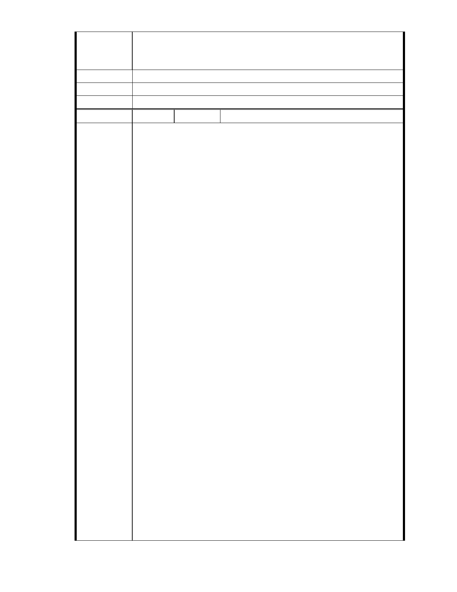

這封信的目的主要是表達我對慈濟內湖園區改善方案的支持，請不要因
政治考量而犧牲了無私為這塊土地付出的人們 感恩
建議辦法
市 府 說 明 相關陳情意見將納入本案審查人民意見，依法定程序辦理。
委 員 會 決 議 同編號 1.。
編
號 215
陳情人 MA201301110194、張麗卿
敬愛的郝市長:
有關[慈濟內湖區開發案]已纏數載 人云亦云 紛紛擾擾 以訛傳訛 此案
早就聽聞 已非新鮮
近日驚聞有心人更利用各種媒體和廣告加以污名化 而慈濟一秉佛教精
神 始終低調未與爭辯 然敝人經數年觀察並經深入各方了解 不得不挺
身而出 執筆抒發建言為真偽辨證了
實不相瞞 敝人數十年前即聽聞[當委員要花百萬元]的謠言 迄今仍如此
盛傳不墜!
直到 912 大地震余擔任志工 近年授證為委員以降 在慈善訪視 造血幹細
胞關懷等等著墨甚深 一路走來 不論時間或在經濟上對所謂[感恩戶]或
捐贈者&配對受贈到幹細胞者之關懷與付出 種種體驗更能體會何謂
[無所求][助人最樂] 而謠言也不攻自破矣! 不僅如此，更常與人分享：「政
府於社會福利區塊如何照拂弱勢. 關懷市民….」之所見所聞。
陳 情 理 由 舉凡透澈人性 自能理解: 人經常為私利之各種圖謀 甚至以各種偽裝或
卑劣手段 不達目的不罷休 醜化他人 層出不窮....
當人生歷練越多 越能體會各式各樣有心之利益團體 因求利不成 假借
綠化環保之聖名 行蹧蹋之實 敝人曾於台灣環保義是啟蒙之際 鼎力支
持所謂[環保綠委]不虞餘力 當看清諸多真相後 自覺魯鈍可笑至極。如今
在內湖區某些有心人 為搬開阻擋跟前之大石頭 昧著良心攻擊所謂[台灣
之光]之慈濟[功德]會 其實 慈濟於對於全球環保投入與帶動不虞餘力
甚至在聯合國為世界環保盡心戮力 舉世皆知 敬愛的好市長 您心知肚
明啊!
敬愛的市長 懇請帶領所有經辦 有所擔當 不必投鼠忌器 為寶島福地
盡地球人之本分 愛惜它更要保護它 發揮您的智慧與高貴情操 明辨真
相 讓慈濟在內湖區發揮社區功能 略盡棉薄 余當銘感五內!
誠摯祝禱 時祺 闔局平安順利 蒸蒸日上!
- 274 -